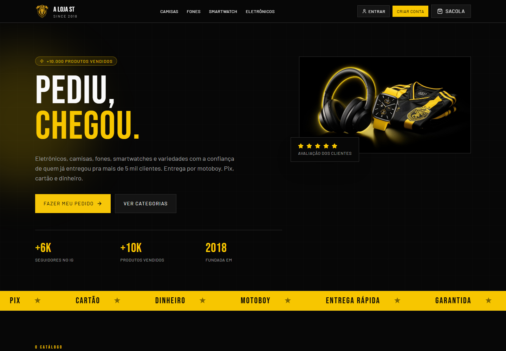
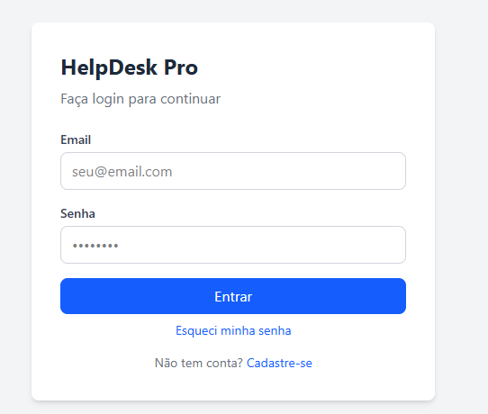

Vivência com ERPs, loja, TEF, infraestrutura e sistemas que não podem parar.
Sobre mim
Perfil técnico em evolução, com repertório de operação crítica
Minha base veio de ambientes onde tecnologia sustenta a operação todos os dias. Hoje aplico essa vivência em projetos full stack, cloud, automações, IA e banco de dados.
O que levo para um time
Experiência prática em varejo de alto volume, continuidade operacional de múltiplas unidades, resolução de incidentes críticos, criação de relatórios SQL, conciliação TEF, administração de sistemas empresariais e melhoria de fluxos internos. Essa base ajuda a construir soluções conectadas com problemas reais de negócio.
Resolução de incidentes
Automação de processos
SQL e relatórios
Deploy serverless
IA aplicada
Posicionamento
Desenvolvedor Full Stack Junior com base em sistemas corporativos, SQL, cloud, Python, IA e automação, buscando criar soluções úteis, seguras e aplicáveis ao dia a dia das empresas.
React + TypeScript
Supabase + PostgreSQL
Python + IA
Competências técnicas
Stack organizada para desenvolvimento, dados, automação e sustentação
01
Front-end
ReactJavaScriptTypeScriptCSSTailwind CSSshadcn/uiUI/UX
02
Back-end
PythonNode.jsCloudflare WorkersAPIs RESTFastAPIDjangoAutenticação e AutorizaçãoCRUDIntegração de SistemasAutomação de ProcessosRegras de Negócio
03
Cloud, Deploy & DevOps
GitGithubCloudflareRailwayDockerVercelNetlifyControle de VersãoGerenciamento de Ambientes
04
IA & Automação
ClaudeCodexEngenharia de PromptAutomação de IAAplicação de IA em Processos CorporativosGenerativa
05
Banco de Dados e Relatórios
SQLPostgreSQLNoSQLOracle DatabaseLevantamento de RequisitosMapeamento de ProcessosDocumentação TécnicaApoio à decisãoResolução de ProblemasMelhoria Contínua
06
ERP, Sistemas e Operações
Winthor ERPTOTVSLinearGLPILinha TEF
07
Infraestrutura e Suporte
TCP/IPDNSDHCPPABX/VOIPAnyDeskTeamViewer
Projetos
Construção real, publicação e automação com IA
Projetos publicados com escopo completo: construção, deploy e operação em produção.
Projetos publicados

Full Stack / Cloud / Banco de Dados
A Loja ST
E-commerce Full Stack
E-commerce com catálogo, páginas por categoria, produto individual, carrinho persistente, checkout, autenticação e painel administrativo.
- Banco estruturado para usuários, permissões, produtos, categorias, variações, pedidos e configurações.
- Autenticação com Supabase Auth, controle administrativo e Row Level Security.
- Deploy serverless com Cloudflare Workers, Wrangler e gerenciamento de variáveis/secrets.
ReactTypeScriptTanStack StartSupabasePostgreSQLCloudflare Workers
Static Web App / Dados / UX
Casa do Vinho
Carta de Vinhos Interativa
Carta digital publicada para consulta de vinhos, com busca, filtros por país, tipo e uva, cards de rótulos e ficha técnica em modal.
- Transformação da carta em dados estruturados para navegação e consulta rápida.
- Interface responsiva com filtros, busca, contadores e detalhamento dos rótulos.
- Deploy estático na Vercel com assets organizados e experiência pronta para acesso público.
HTMLCSSJavaScriptDados estruturadosVercelUX

Full Stack / API / Dashboard / IA
HelpDesk Pro
Sistema de Chamados Técnicos
Sistema completo de abertura e gestão de chamados com painel administrativo, controle de SLA, histórico de interações e dashboard operacional — do banco ao deploy.
- API REST em Python + FastAPI com autenticação JWT, rotas de chamados, admin e recuperação de senha.
- Frontend React + TypeScript com rotas protegidas, contexto de auth e integração completa com a API.
- Dashboard Streamlit com KPIs, 4 gráficos interativos (Plotly) e tabela filtrável conectada ao Supabase.
- Deploy em 3 plataformas: Vercel (front), Railway (API) e Streamlit Cloud (dashboard).
ReactTypeScriptPythonFastAPISupabasePostgreSQLStreamlitRailwayVercel
Experiência profissional
Vivência real com sistemas críticos, suporte, infraestrutura e dados
Técnico de TI
Atacadista Super Adega - Brasília, DF
Sustentação de sistemas críticos em varejo de alto volume, com suporte N1 a N3 para múltiplas unidades e continuidade operacional de ERPs, servidores, rede, TEF, checkouts e sistemas internos.
- Promovido de estagiário para Técnico de TI em menos de 2 meses.
- Automatizou o monitoramento de balanças por plataforma cloud.
- Criou relatórios em Oracle SQL para apoiar rotinas operacionais e reduzir retrabalho.
- Resolveu incidentes críticos envolvendo ERP, servidores, rede, TEF, sistemas de loja e equipamentos de checkout.
- Gerenciou conciliação de cartões via Linha TEF.
- Configurou e manteve infraestrutura com TCP/IP, DNS, DHCP, servidores físicos e PABX/VOIP.
Estagiário de TI
Atacadista Super Adega - Brasília, DF
Suporte técnico inicial a usuários, manutenção de equipamentos, atendimento de chamados, apoio em checkouts e resolução de problemas operacionais.
- Efetivado em menos de 2 meses pelo desempenho na resolução de chamados e adaptação ao ambiente técnico.
- Apoio em rotinas de infraestrutura, suporte a usuários e manutenção de equipamentos utilizados na operação.
Diferenciais
Perfil híbrido: operação, sistemas, dados e construção de soluções
Contato
Vamos conversar sobre tecnologia, dados e automação?
Busco oportunidades para aplicar minha base em sistemas corporativos e minha evolução em desenvolvimento full stack, cloud, Python, SQL, IA e automação.